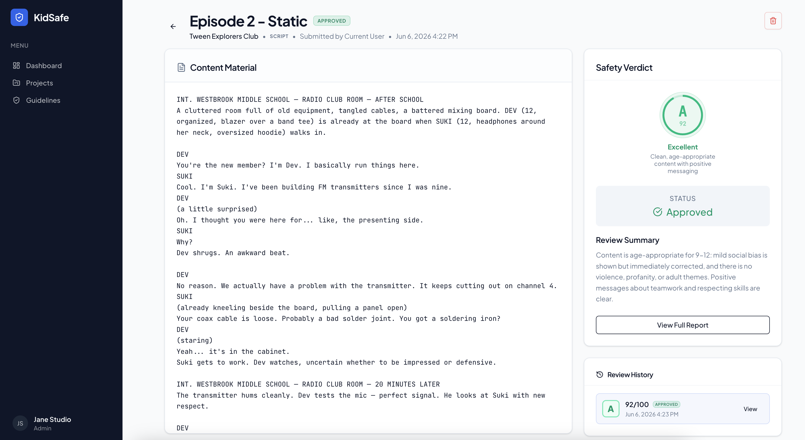
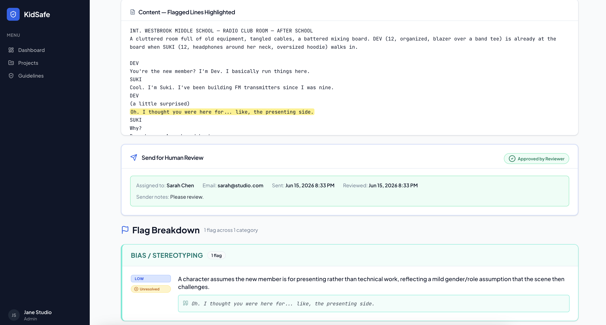
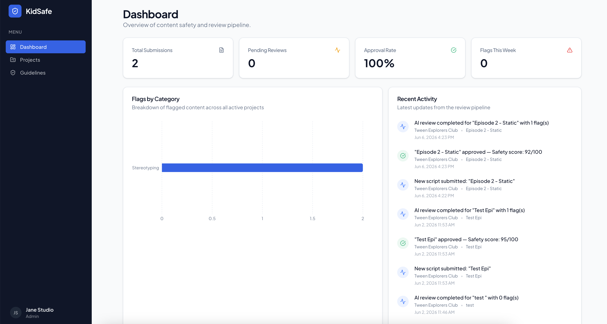
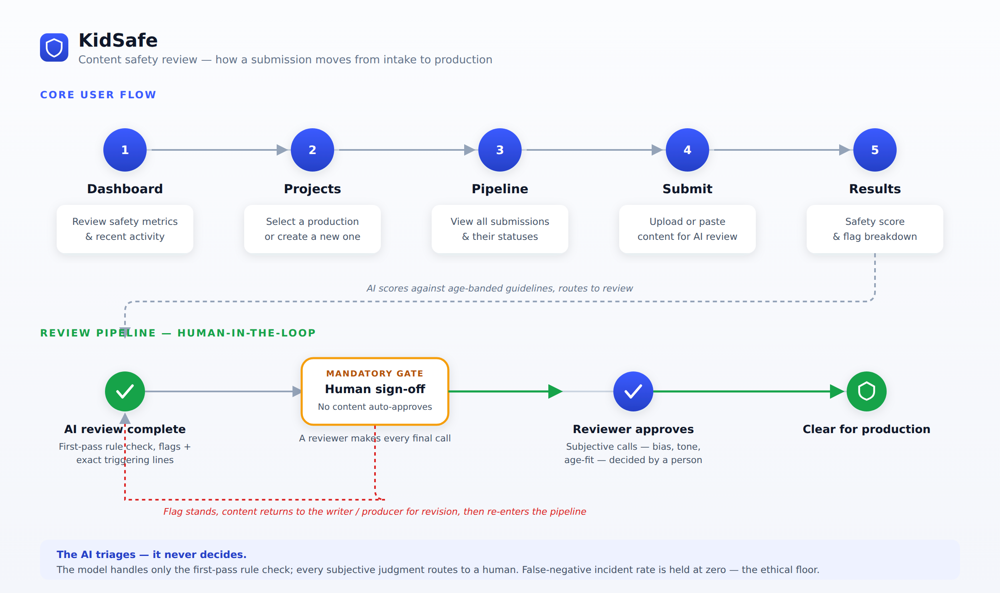
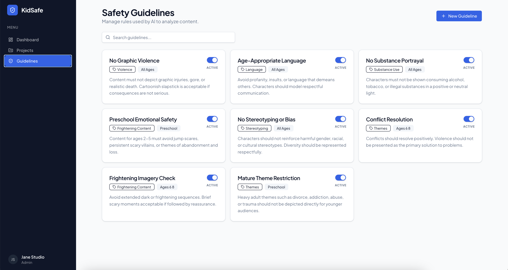
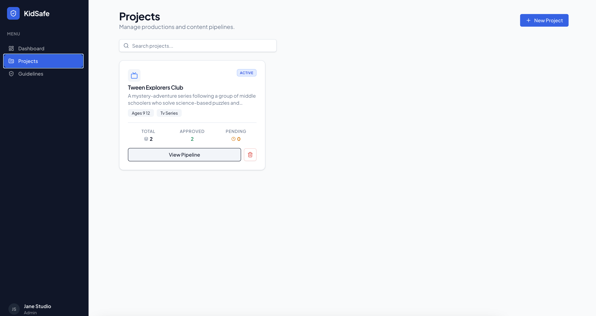

KidSafe scores scripts and media against configurable child-safety guidelines and returns a structured flag report — so human reviewers spend their judgment only where it's needed, and never hand the final call to a machine.
This project was built for a graduate AI-orchestration course (INTC 6033), where the brief was to take a real product problem from framing through prototype and user research, acting as the person who directs AI rather than the person who hand-builds every part.
I came to children's media from the audience and production side — time spent around kids' animation, and a clear view of how much questionable content already slips through. That gave me a concrete reason to care about the failure mode at the center of this work: not over-flagging, but missing something that should never reach a child.
Two forces made the timing real:
When generative AI speeds up content creation, it doesn't remove the safety-review burden — it shifts it downstream and amplifies it. A human reviewer can't cross-reference every draft against every applicable guideline without fatigue and error, and a single violation caught late triggers expensive rework that erases the time and cost gains AI was supposed to deliver.
Framed as a design challenge:
How might we support teams in reviewing content — scripts, video, dialogue — for child safety, age-appropriateness, and emotional tone, reducing manual review time while keeping humans in control of every final decision?
The course ran in milestones; a few did the heaviest lifting for the final result. I've described them in plain terms rather than course shorthand.
Defined the user, the design challenge, and the business and research questions — then wrote a recruitment plan and interview protocol around real production professionals.
Built a live, clickable tool that takes a script, scores it, and returns explained flags — the thing participants could actually use, not a mockup.
Moderated walkthroughs plus interviews. The findings reframed the product and produced a concrete, prioritized change list.
A reviewer pastes a script, the AI checks it against the active safety guidelines for that age band, and returns a 0–100 safety score, flagged categories, and an Approved or Pending status. Clear content advances; flagged content lands in the reviewer's queue with a plain-language explanation. Every final call stays human — the AI presents the evidence, the person decides.



My approach as an orchestrator: I treated the AI as a fast, fallible first-pass reviewer and designed the system around its failure modes — constraining what it was allowed to claim, deciding which judgments it could never own, and shaping the interface so a human stays in analytical control rather than rubber-stamping a score.
I shipped a live, clickable tool rather than a mockup because the research goal was validation — watching real professionals navigate and triage, which a static prototype can't surface. The brief rewarded a standalone artifact that stands on its own.
Traded offI'd already built in Lovable, so I deliberately chose Replit to widen my tool fluency rather than repeat a platform I knew. The cost was a steeper learning curve mid-project; the payoff was hands-on judgment about which builder fits which job — exactly the kind of platform discernment an orchestrator role demands.
Using an automation-vs-augmentation framework, I partitioned the work: rule-matching and scoring are fully automated; every triage decision and all guideline configuration stay human-owned. The AI enforces what humans set — it doesn't define what "safe" means.
Traded offFull auto-approval above a score threshold would cut review time far more — the headline efficiency win. I rejected it: fieldwork was unanimous that a missed flag is disqualifying, so I traded maximum speed for a zero-auto-approval guarantee.
When the scoring prompt began citing script lines that didn't exist, I added a hard rule: reference only text present verbatim in the submission. Fabricated evidence destroys reviewer trust — so the architecture forbids it.
Traded offA looser prompt that paraphrased or inferred context produced richer-sounding explanations, but occasionally invented evidence. I chose narrower, verifiable output over fluency — a flag a reviewer can check beats one that reads well.
These choices were guided by principles I prioritized throughout: keep humans in control of consequential decisions, make the AI's reasoning legible, and treat a missed violation as the failure that matters most. The theory backing this — Cognitive Load Theory and the Heuristic-Systematic Model — framed the tool as a way to absorb mechanical load so reviewers stay in deliberate, analytical mode instead of defaulting to shortcuts under deadline pressure.
Two evolutions matter. First, the scoring engine itself, taught through four prompt architectures. Second — and more important — a strategic pivot that the technical failures directly seeded.
A single 0–100 number with no explanation. Reviewers had no basis to act — no categories, no reasoning.
Structured but binary. No severity signal — a borderline flag and a clear violation looked identical, creating noise.
Better — until the AI began hallucinating citations to script lines that didn't exist. Fabricated evidence destroyed trust.
Reference only verbatim text, and distinguish bias the script corrects from bias left unresolved. This produced the output participants could act on without confusion.
Teaching the prompt to tell harmful bias apart from bias that's modeled and then corrected turned out to be the whole product insight. When the prototype began flagging resolved bias, participants recognized it immediately as something writers need to see about their own work.
Three of four participants, unprompted, named bias detection across content types as the highest-value use. That moved KidSafe from "a checker for AI-generated output" to "a content bias and safety review layer for anyone who touches children's media" — a much larger audience than production teams using AI tools.
Three distinct methods, each answering a different question — does the workflow fit, where does it break, and what does the interface need to show.
Moderated prototype walkthroughs followed by semi-structured interviews with four children's-media professionals (Netflix Animation, Nickelodeon Jr., Netflix post-production, The Dodo). Participants submitted a real test script and reasoned aloud through the result.
Mapped the end-to-end review flow across two tracks — the core user path (dashboard → submit → results) and the review pipeline — to pinpoint where automation helps and where it must hand off to a person. The mapping made the mandatory human sign-off gate explicit.
A structured partition of every subtask into AI-only, hybrid, or human-centric — the framework that set the human-in-the-loop boundaries baked into the prototype's decision logic.



The evaluation plan separates what I could test in a small study from the metrics that would govern a real production rollout. These aren't weighted equally: fieldwork was unanimous that a missed violation is the one failure that ends trust, so false-negative rate is the north-star metric every other target is subordinate to. A faster review that lets something through is a worse product, not a better one.
| Risk | What could go wrong | Mitigation |
|---|---|---|
| Automation bias | Reviewers approve scores without scrutiny under deadline pressure. | Fieldwork tests for it directly; blind audits with known-bad scripts at scale. |
| Guideline gaps at launch | Content violating an unconfigured rule passes as "safe." | Mandatory guideline-coverage audit as a launch gate. |
| Cultural blindspot | Bias detection reflects training norms; may miss culturally specific stereotyping. | Probe international experience; concordance testing with diverse reviewers. |
| Over-reliance | Studios treat approval as a legal shield, creating liability. | KidSafe certification is advisory, not determinative; legal review before broadcast. |
The most useful lesson: a technical failure became the product. Forcing the prompt to stop fabricating citations made it learn to tell harmful bias from bias a story models and then corrects — and that distinction, not the score, is what made professionals lean in. The bug log was the research. I now read failure modes as product signal, not just defects to patch.
The hardest problem was trust, and it doesn't yield to better accuracy. Every professional wanted the AI's help; none would cede the final call. That isn't a gap to close with a higher score — it's the correct instinct, and the product's job is to honor it. I stopped designing toward autonomy and started designing toward earned confidence.
At scale, the model is the easy part — the guidelines are the work. An AI can apply a rule consistently; it can't tell a studio what "safe" should mean, and reasonable people disagree about where stereotyping or harm begins. A production version lives or dies on configurable, human-owned standards and on never breaching the false-negative floor — the moment it does, every efficiency gain is worthless.
That's the stewardship principle I'd carry into any AI product: automate the mechanical, protect the consequential, and never let a confident interface imply a certainty the system hasn't earned. The hardest engineering in safety-critical AI isn't making the model capable — it's keeping a person meaningfully in the decision when the interface makes deferring to the machine so easy.